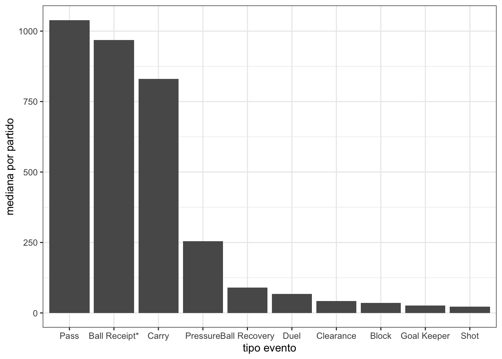
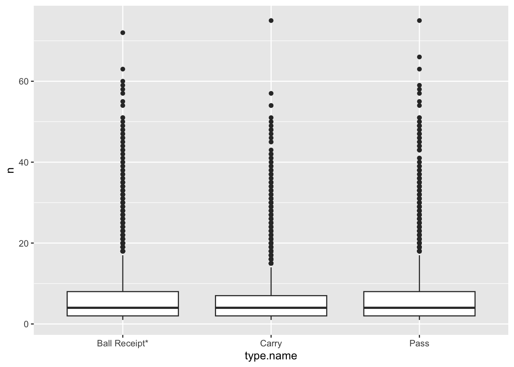
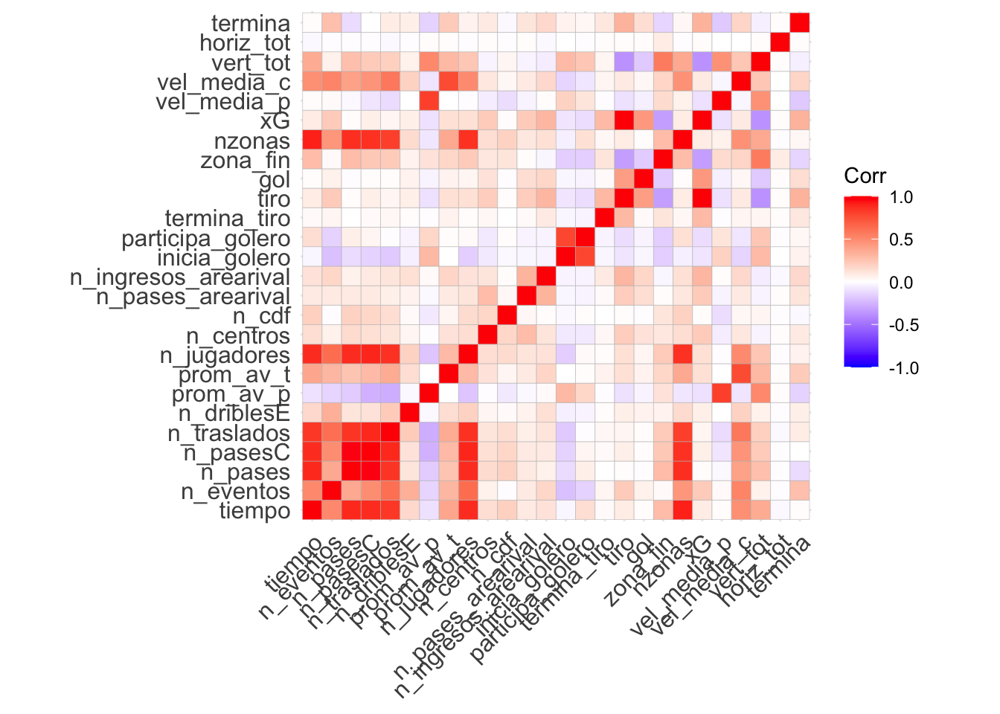
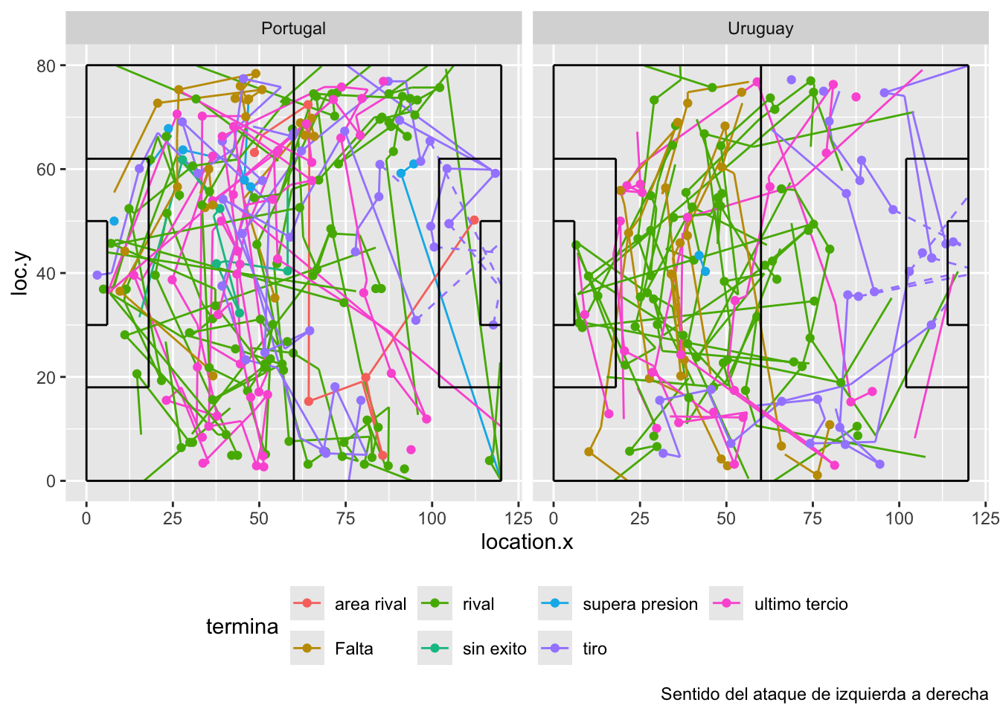
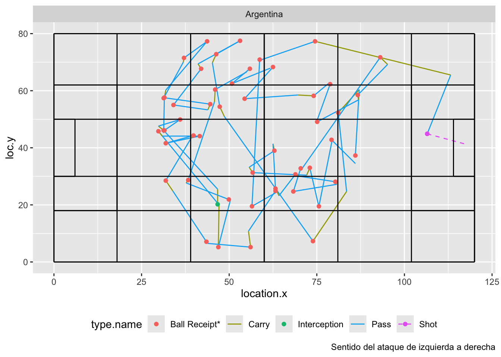
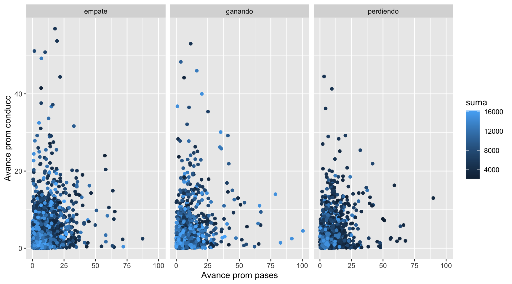
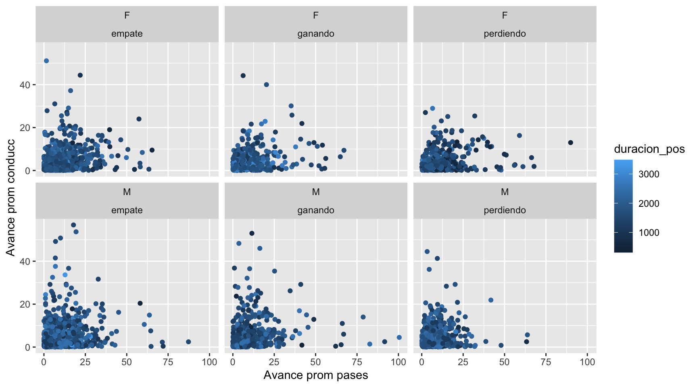

eventos
1 Starting XI
2 Half Start
3 Pass
4 Ball Receipt*
5 Carry
6 Pressure
7 Clearance
8 Ball Recovery
9 Dispossessed
10 Duel
11 Foul Committed
12 Foul Won
13 Shot
14 Block
15 Goal Keeper
16 Injury Stoppage
17 Referee Ball-Drop
18 Interception
19 Miscontrol
20 Dribbled Past
21 Dribble
22 Substitution
23 Half End
24 Tactical Shift
25 Shield
26 50/50
27 Error
28 Bad Behaviour
29 Player Off
30 Player On
31 Offside
32 Own Goal Against
33 Own Goal ForAvance
Resumen de la base
Eventos
Las bases de datos corresponden a los datos de eventing proporcionados por la empresa StatsBomb, especializada en la recolección y análisis de datos en el mundo del fútbol, de cada uno de los partidos del Mundial masculino disputado en Catar en 2022 y del Mundial femenino disputado en Australia y Nueva Zelanda en 2023 (64 partidos). Dicha base está compuesta por los distintos eventos que se realizaron en el transcurso de cada encuentro y variables asociadas a cada tipo de evento según corresponda (184 variables y 459967 observaciones entre los 2 mundiales). Se considera un evento cada una de las acciones realizadas ya sea por los jugadores (pases, tiros al arco, atajadas, regates, traslados de balón, …) así como del resto de los actores de un partido (cambios, tarjetas, inicio/final de partido, entre otras). Las posesiones están compuestas por varios de estos tipos de eventos. En este caso, la base de Statsbomb cuenta con 33 eventos distintos, los cuales se detallan en la tabla a continuación
Algunos de estos eventos no refieren especificamente a situaciones de juego tales como incios y finales de partidos, sustituciones de jugadores, formaciones iniciales, tarjetas mostradas por el juez, cambios tácticos, sueltas neutrales de balón y pausas en el partido ya sea por lesión u otra situación excepcional. Estos eventos no serán tenidos en cuenta en el análisis ya se considera que no aportan nada desde el punto de vista del juego y de las posesiones dentro del mismo. ASIMISMO, SI BIEN REFIEREN A ACCIONES DE JUEGO, TAMBIÉN SE EXCLUYEN OTROS EVENTOS TALES COMO SHIELD, MISCONTROL. Lo mismo haremos con los registros de las tandas de penales (período 5 en la base) que serán excluidos del análisis.
En ese sentido se trabajará con las acciones de juego que involucren la pelota o la disputa de ésta. Mayoritariamente tenemos pases pero también se registran traslados con pelota controlada (Carry), recepción de balón (Ball Receipt), acciones defensivas de presión hacia un rival (Pressure), recuperaciones de pelota (Ball Recovery), duelos (Duel), despejes (Clearance), tiros al arco (Shot), regates (Dribble), atajadas(Goal Keeper), entre otros.
Luego de los remates al arco (que determinan los resultados directamente), los pases son el aspecto fundamental de la forma de juego de los equipos por lo que es esperable encontrar que éstos representen la mayor cantidad de registros (30%) y los eventos predominantes en cada posesión (1070 pases en promedio por partido y 6.2 por posesión) independientemente de que estos hayan sido exitosos o no. Los eventos de tipo pases tienen asociados otro tipo de eventos que son los Ball Receipt que por lo general se dan cuando los pases efectivamente llegaron a destino, lo único qué nos dice las coordenadas de la cancha dónde se recibieron los distintos pases. VER QUÉ HACER CON ESTOS TIPOS DE EVENTOS. LOS SACAMOS? HAY BALL RECEIPT QUE NO PROVENGAN DE PASES? QUÉ SON? ????


Variables a utilizar
Además de la variable ya mencionada respecto a qué tipo de acción se da en cada jugada tenemos otros tipos de variables. Por una parte, tenemos algunas relativas a cada acción (evento de juego): cuándo y dónde se realiza, qué equipo (y qué jugador) lo realiza, qué equipo tiene la posesión y a qué tipo de secuencia refiere (play_pattern.name). Más concretamente, cada acción forma parte de una posesión dentro de cada uno de los 64 partidos a analizar. Estas posesiones son las que queremos estudiar y se definen como los períodos de tiempo en el que un equipo logra establecer el control de la pelota hasta que el rival la recupera y logra asesgurarla. Por ejemplo, puede suceder que haya secuencias en las que un equipo realice acciones dentro de posesiones del equipo rival. Esto se debe a que con esas acciones no logra asegurar la posesión por lo que el identificador correspondiente permanece incambiado. En esta primera instancia del análisis no se tendrán en cuenta este tipo de posesiones, se trabajará únicamente con aquellas en las cuales sólo el equipo dueño de esa secuencia realiza las acciones. También puede ocurrir que si bien un equipo no pierde el control de la pelota, el contador de la posesión se reinicie ya que cuando la pelota sale de la cancha, automáticamente se genera una nueva secuencia independientemente del equipo que reanude el juego.
Por otra parte tenemos distintas características de los distintos tipos de evento según corresponda tales como su éxito o no, los distintos tipos de acciones, distancia, entre otras.
En este contexto se buscará estudiar las distintas secuencias de los equipos en cuanto tienen la posesión a su favor (possession). En ese sentido, tomando en cuenta ambas copas del mundo tenemos en promedio un poco más de 177 posesiones por partido para el mundial masculino mientras que un poco menos de 193 para el femenino.
`summarise()` has grouped output by 'mundial', 'match_id'. You can override
using the `.groups` argument.

Además de las variables contenidas originalmente en la base, se crea una nueva que nos indica el resultado del partido desde el punto de vista del equipo que realiza la acción (no el equipo dueño de la posesión). Es decir, si el equipo va ganando, perdiendo o empatando.

Por lo tanto, nuestra observaciones pasarán a ser las posesiones y no los distintos eventos. A estos efectos, con la información contenida en los datos de eventing de SB se buscará conformar una base que nos permita describir cada una de estas secuencias para su posterior estudio y clasificación. Para ello, en una primera instancia, no se trabajará con todas las posesiones sino que por simplicidad nos quedaremos únicamente con aquellas posesiones en las cuales las acciones en las mismas son realizadas por el equipos poseedor del balón o, en su defecto, que las acciones del rival no involucren directamente la pelota: acciones de presión, faltas cometidas o recibidas, atajadas del golero y/o jugadores dribleados del conjunto que esta defendiendo (Dribbled Past). De esta manera la trayectoria de la pelota se ve únicamente afectada por las acciones realizadas por el equipo que tiene la posesión y no por el rival. Nos quedaremos finalmente con 5269 posesiones a nivel masculino y 4706 del mundial femenino para estudiar la trayectoria de la pelota en estas secuencias a través de sus características para su posterior clasificación.
Características de las posesiones
A través de los datos de eventing se generará una nueva base que contenga características de las casi 10000 secuencias a estudiar. La elección de dichas características es un tanto arbitraria pero se entiende que pueden ser de valor o utilidad a la hora de describir o encontrar ciertos patrones o estilos de juego: coordenadas de inicio y fin de la posesión (así como las zonas de inicio y fin), cantidad pases (totales y exitosos), de traslados (totales y exitosos), de tiros y de eventos en general realizados, cantidad de centros, cambios de frente, ingresos al área rival con pelota controlada y pases dentro del área, promedio de avance en el terreno según sea por pases o traslados con pelota controlada, si la jugada es iniciada por el golero, si éste participa o no, si termina en tiro o en gol, o incluso variables del estilo de la velocidad promedio de la posesión cuando los pases y las conducciones con la pelota se realizan hacia adelante.

División en zonas
También podría ser útil tener en consideración no sólo dónde inició y terminó cada jugada sino que también de alguna manera replicar la trayectoria de la pelota en la secuencia. Para ello, se propone dividir la cancha en zonas y analizar hacia dónde el equipo llevó el balón y por cuántos sectores (zonas) del terreno pasó la pelota en la jugada. Cabe aclarar que para el conteo de zonas se tendrá en cuenta únicamente aquellas zonas dónde se realizaron acciones y no necesariamente por dónde pasó la pelota.

Otro aspecto relevante a estudiar de las secuencias es su éxito o no al momento de generar situaciones ventajosas para el equipo. En ese sentido, se crea una métrica que, en una primera instancia y de manera muy poco abarcativa, se definen como exitosas aquellas jugadas en las que se realiza un remate al arco o bien el equipo que tiene la posesión logra sacar una falta o un córner. Se buscará trabajar en esta línea de modo de definir y encontrar qué tipo de jugadas son exitosas más allá de éstas ya mencionadas. A modo de ejemplo, podríamos preguntarnos si luego de recibir un pase de un compañero, un futbolista logra avanzar una cierta distancia con la pelota controlada, no es una situación ventajosa? La posesión sería exitosa en ese caso?
Si quisieramos podríamos ver en detalle cómo se componen las posesiones de modo de ver qué tipo de eventos realizan los equipos y en qué sector del terreno. A los efectos de caracterizar estas posesiones, estos aspectos pueden tener particular relevancia ya que no es lo mismo que las posesiones sean básicamente pases entre compañeros a que sean jugadores aislados que trasladan la pelota sin tantos pases de por medio.
Respecto a la cantidad de zonas no hay particularmente una división óptima ni mejor pero en este caso tenemos 3 divisiones tales como podemos ver en la figura siguiente (el sentido del ataque es de izquierda a derecha). Las división en 8 zonas corresponde al estudio realizado por Shen, Santo & Akande en el cual a través del estudio de los flow-motifs proponen un análisis del ritmo de juego de las posesiones. Las otras dos maneras de dividir la cancha corresponden a distintas propuestas de distintos analistas de modo de estudiar aspectos del juego.

Asimismo, también podría ser relevante observar cuantas acciones (eventos) se realizan en cada una de estas zonas y no solo si pasan por allí o no de modo de caracterizar aún más los patrones de juego de los equipos. Si tomamos la división en 30 zonas, se encuentra la siguiente posesión del partido de Argengina vs Polonia en la cual se realizaron acciones en 20 zonas (no necesariamente por donde pasó la pelota). Cabe preguntarse si es de interés tomar en cuenta las zonas por donde pasa la trayectoria de la pelota en toda la secuencia.

De alguna manera resulta esperable que a mayor duración de la posesión, mayor cantidad de zonas por la que pasa el juego de un equipo. Para ello, analizamos las dispersión de la cantidad de zonas por la que pasa una secuencia en función del tiempo (agrupado en intervalos de 6 segundos) Asimismo, podemos ver puntualmente la dispersión de durante todo el campeonato de las secuencias de Argentina y Francia (los finalistas) y de España y Arabia Saudita, el de mayor tiempo de posesión promedio por partido y el de menor respectivamente.



